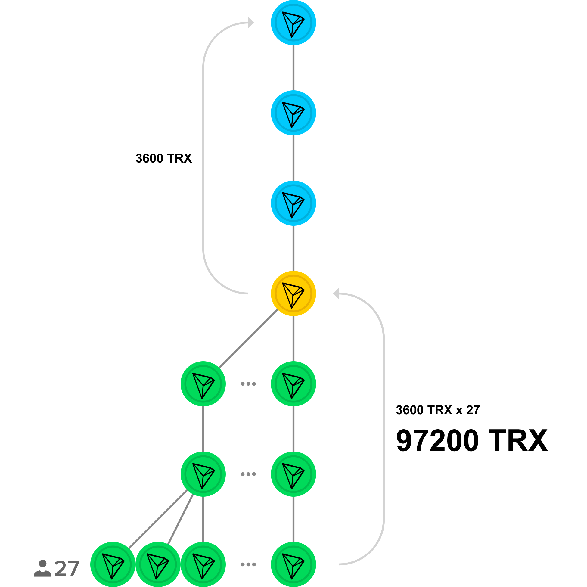
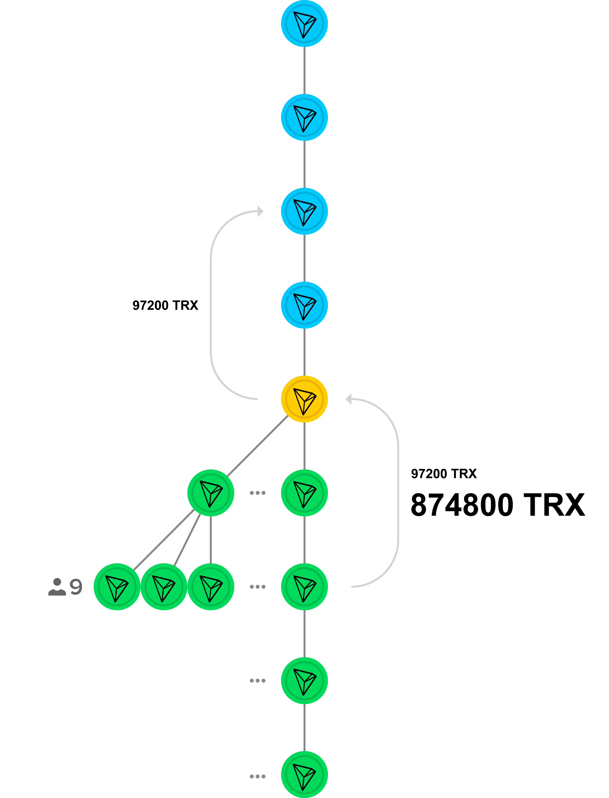

To register and simultaneously receive the 1st level in the System, send 400 TℜX to your upline. And the first user, that will come after you, will send this amount back to you. This is 1 time action at all. All other transfers are made at the expense of already earned funds. Simple and clear guide on the page SIGN UP.
LOG IN TO THE ACCOUNT, using only the TRON wallet.
The password is not needed, since your account is in a smart contract, and not on the site. Therefore, your account cannot be blocked or deleted from the System even by the site administration. And your Tron wallet can not be hacked or changed to another.
We never ask your private keys.
There are three ways to get referrals:
1) Attract referrals to your structure in CRYPTOFRIENDS.
2) Get referrals from your uplines by "overflows" (as programmed in the smart contract).
3) Wait until the system will bring you free referrals by itself.
Receive automatic transactions from smart contract directly on your TRON wallet. According to the tabel below, on the 1st level you are transferred 1200 TℜX, on the 2nd level - 3600 TℜX, and on the 3rd level - 10800 TℜX. (there are 8 levels in total and 80M TℜX of earnings). No need to accept transactions or request payments. The funds directly come to your wallet.
If you have more than 40M TℜX and 120 anonymous referrals. What to do next? It may be repeated every year, retaining a structure. And get the same amount of income every year, collected by all the time in the system. And the FEWER people left in your structure, the MORE your income is. Your inactive and dropped out referrals - a "door", to all their referrals of the same line, in case of their inactivity.
Nobody can close your account, to stop payments or make changes to the system, since the smart contract is loaded into the Tron network. It can't be deleted or changed. Referrals can be invited without a website and referral links but directly into a smart contract. Therefore, the CRYPTOFRIENDS System will exist as long as the cryptocurrency exist, and the cryptocurrency will exist as long as the Internet exist.
0. TRON
0.0.
You will need a TRON compatible wallet such as TronLink (Chrome) or TronWallet (Android + iOS) to join us.
You can buy TRON cryptocurrency at BESTCHANGE.com
1. Sign up
1.1.
Click the link SIGN UP at the top of the site, enter a number of your upline TRON-wallet and click the button "Done" or the button "Get upline from the system", if you haven't upline.
The smart contract instantly redirects 400 TℜX to your first-line upline (your direct inviter), and assigns you the first level in the system. A successful transaction will register you in the System and assign the 1st level to Your account (more details about the levels below).
1.2.
These 400 TℜX will return to you fully after the first referral.
2. Log In
2.1.
LOG IN the account via TRON-wallet.
Account can not be hacked, because there is nothing to hack and there is no password. When you enter the address in your account, the information of this wallet will be taken from the blockchain TRON and displayed,
Account can not be blocked by anyone, including the administration of the project, and the wallet can not be changed to another.
Your TRON wallet also cannot be blocked due to decentralization. This is a feature of cryptocurrency.
We never ask you to enter your private keys.
3. Attract or wait for referrals
3.1.
After purchasing Level 1 You can invite 3 referals personally. These are your 1st line referrals.
3.2.
If you have invited 3 referrals and then invited the 4th, he will be automatically directed to your referrals in order from the first in the list and if each of them has all 3 slots filled, he will be directed to the referral of your referral. If you sign up without a site directly through a smart contract overflows will work up to the 5th line and if you sign up through the site, overflows will work up to the 8th line . Details in FAQ.
3.3. Free referrals.
Free referrals are distributed evenly throughout the System, and starting with those uplines, who earlier registered in the System.
4. Income
4.1. (1 level)
The first referral you have invited or received from the System transfers 400 TℜX to you. And from 3 referrals of the 1st line you can receive 1200 TℜX in total.
4.2. (2 level)
Then you transfer all 1200 TℜX to the upline of your upline (to your second-line upline), thereby purchasing the 2nd level.
The second and all the next levels can be bought immediately after the purchase of the previous level, without waiting for all the slots to be filled with referrals. More info below.
When you acquire level 2 from your second line upline, referrals of your referrals (or your referrals of the 2nd line ) can buy level 2 from you. 9 people transferred 1200 TℜX to you and you have 10800 TℜX on the second level as total.
4.3. (3 level)

After the purchase of the second level You can purchase 3th level, by making a transaction of 3600 TℜX to your 3rd line upline.
Now 27 referrals of the 3rd line can buy the 3rd level from you. In total, 97200 TℜX can be transferred to you already at the 3rd level.
4.4. (4 level)
You can purchase the 4th level by making a 10800 TℜX transfer to your 4th line upline.
81 referrals of the 4th line can make transfer to you of 10800 TℜX from every of them. And already at the 4th level you can be transferred for 874800 TℜX in total.
4.5. (5 level)
You can buy level 5 by making a transaction of 32400 TℜX (ATTENTION!) again to your 1st line upline (to your direct inviter to the CRYPTOHANDS System).
After that Your 1st line referrals can purchase the 5th level from You. Each of 3 referrals send You 32400 TℜX. In total, you can be transferred for 97200 TℜX on the 5th level.
4.6. (6 level)

Level 6 can be bought from your line 2 upline (from which YOU used to buy Level 2) by making a transfer of 97200 TℜX.
After purchasing the 6th level, your second line referrals can purchase a 6th level from you. 9 people can transfer to you 97200 TℜX by every of them. In total, you will be transferred for 874800 TℜX on the 6th level .
4.7. (7 level)
To buy the 7th level, you have to transfer 291600 TℜX to your 3rd line upline.
After purchasing the 7th level, referrals of the 3rd line can buy the 7th level from you. 27 people can transfer 291600 TℜX to you by every of them. In total on the 7th level you can be transferred for 7.873.200 TℜX (~8M TℜX)
4.8. (8 level)
To purchase the last 8th level, you have to make a transfer of 874800 TℜX to your 4th line upline.
After purchase of 8th level You can be accessed for stransactions of 874800 TℜX from 81 Your referrals of 4th line. In total on the 8th level you can receive 70.858.800 TℜX (~71M TℜX).
4.9 Total profit.
Total profit is 80.688.000 TℜX (Next: 81M TℜX). * ** ***
* The sum of 81M TℜX is the maximum possible theoretical profit, which is almost impossible to do with a one-time passage through all levels, and the probability of getting it tends to 0%.
** In practice, in real conditions it is quite realistic to make HALF of this amount, and the probability of receiving it tends to 100% even with a full passage through the all levels.
*** But with the function "REPEAT", the ability to make 81M TℜX (and more, thanks to inactive referrals) tends to 100% for EVERY CRYPTOHANDS member.
4.10 Note.
If someone wants to buy a level more than you currently have, the funds for the purchase of a level will be automatically redirected to your upline from which you have bought this level.
Example: For some reason, you have stopped participating in the system or have lost access to your TRON wallet. Suppose you have a 3rd level and your 4th line referral buys a 4th level from you. The money is redirected to your 4th line upline.
You will have enough time to buy each level in advance.
BUT! If someone has dropped out or did not buy the 4th level in your structure, then you, in addition to the remaining 80 transfers, will receive an additional 81 transfers for the 4th level, which are redirected from your 4th line referral to you.
5. Whats next? Repeat every year.
5.1. You have created structure of 3 referrals invited by yourself + 9 referral of teh 2nd line + 27 referrals of the 3rd line + 81 referral of th 4th line = 120 referrrals, and have already received more than 40.000.000 TℜX in about a year, then what? Just one time to get the money and thats all?
Over time, the money ceases to reach you and all profits go deep into the structure. And the cost of repeated purchases of levels is incomparably cheaper than the profits that you have already received, and which you can receive again if you repeat everything from the beginning. And you already have referrals, so you don’t need to invite anyone else.
Therefore, buy all the levels again, starting with the first. And, accordingly, each year, receive anew the amount you collected for all the time.
All referrals that do NOT repurchase levels every year become for You a "door" to all their referrals of the same line.
Therefore, the fewer people left in your structure, the greater your profit.
The principle of work is similar to paragraph 4.10.
Each level lasts 365 days. Each level extension is the same time.
If any of your referrals wanted to buy some level many times in a row, for example, 10 years in advance; and if you do not have the corresponding level bought as many times for the same years ahead, but ACTIVE at the moment, then ALL MONEY for all purchases of this referral for any number of years ahead - GO TO YOU.
Data on all levels in a convenient form are presented in a personal account.
6. Guarantees
If you build a large structure with which you will receive money every year, only increasing income and if referrals become inactive, then what KIND OF GUARANTEE you will receive that the site does not close or that the administration will not stop supporting the project?
6.1. Guarantee that your TRON wallet will NOT be blocked.
TRON wallet blocking is impossible by definition due to the blockchain features.
The reverse side of the coin: if you lose control of your wallet, no one will restore it to you.
We never ask you to enter your private keys.
6.2. The guarantee that your account in the system will NOT be blocked or hacked.
Blocking or hacking an account is also impossible by definition. Your account is NOT on the website and servers, but in the smart contract on the TRON main network. This means that no one, including those who develop a smart contract, CAN NOT theoretically even change, correct or delete it.
Information on the site in your account is available WITHOUT PASSWORD, and is uploaded to the site from the public statistics of the TRON smart contract.
6.3. The guarantee that you are protected from the termination of the site and the disappearance of the administration.
6.3.1.
Smart, contract and your account exists autonomously from the site, and even closing the site can not make changes to the System, given that each of your withdrawn referral repeatedly increases your profits (see the example above in note 4.9).
6.3.2.
Any programmer in the world can make a mirror site of the same smart contract.
6.3.3.
Group leaders (both your upline and your referrals) can make a site for a specific team.
Each member is protected even for this point. Join now, while everything is just beginning!))
8 levels in total and 120 referrals
| Level | Price | Refferals | Income |
|---|---|---|---|
| #1 | 400 TℜX | 3 | 1200 TℜX |
| #2 | 1200 TℜX | 9 | 10800 TℜX |
| #3 | 3600 TℜX | 27 | 97200 TℜX |
| #4 | 10800 TℜX | 81 | 874800 TℜX |
| #5 | 32400 TℜX | 3 | 97200 TℜX |
| #6 | 97200 TℜX | 9 | 874800 TℜX |
| #7 | 291600 TℜX | 27 | 7.9M TℜX |
| #8 | 874800 TℜX | 81 | 71M TℜX |
1M TℜX= 1000000 TℜX
Your costs in the project won't pass more than 400 TℜX, wich will be returned with the first referral. No "payment requests" and no need to wait. Your funds are immediately transferred to your wallet.
This is the world first System that no one controls. The human factor (including the admin factor) is completely absent. Nobody can stop, make changes to the System or to hold your funds. The open source smart contract cannot be removed from the Tron network.
The system finds referrals for you by itself. Participants who came not via referral link become consolidated referrals and are distributed evenly between users starting from those who previously bought level 1.
The administration of the project does not have access to your money, all calculations are made through a smart contract (it cannot be changed), which immediately redirects funds to the TRON wallet.
When all the 3 slots of your upliner's 1st, 2nd, 3d, or 4th line will be filled, the next referrals, invited by his ads, will be yours or will become referrals of Your own referrals from which you also make a profit.
Even if the project site will cease to exist, the eternal work of the system is guaranteed by smart contract and TRON blokchain.
INactive referral multiplies your profit. INactive or dropped out referral - is a "passage" to the ALL referral of the same line. If your inactive referral is on the 4th line, You will receive 80 transfers + ADDITIONALY 81 more transcations from the all his 4th line referrals.
Profit, received for all time in the project, can be repeated every year. The FEWER persons in Your structure use this function, the HIGHER Tour profit will be. All INactive referrals are also a "door" to all the referrals of the same line.
Total participants
Total transactions
Yes, indeed, such systems existed both 5 years ago and before the advent of the Internet, and they WORK.
However, it had several major problems:
1) Different payment systems constantly blocked the wallets of the participants.
2) Manual confirmation of transfers with all the ensuing consequences in the form of the human factor and constant proceedings, who transferred funds to whom and who did not.
3) There was no recurrence. A person once created a structure and once received money, albeit relatively large. And then all the turns went deep into the structure, and the participant did not get any more.
4) Closing or hacking a site meant a system crash, and hacking sites sometimes happened.
Cryptocurrency and TRON solves ALL these problems:
1) Wallet can not be blocked even in theory. The reverse side of the coin: in no case do not lose control over your wallet. It will be impossible to replace your wallet with others.
2) Public transactions and instant automatic confirmations. The human factor is excluded completely.
3) We made the function "REPEAT", which the participants themselves had previously requested in other systems. Once created a structure and receive income every year.
If people in your structure do not prolong their participation every year - your income increases many times over. More on the page How it works in the section "REPEAT".
4) Closing or hacking the site will in no way affect the operation of the system, since the CRYPTOFRIENDS smart contract is loaded into the main TRON network, and cannot be deleted by anyone including its developers.
This means that for the first time in the history of mankind (no matter how loud it sounds), there are real 100% guarantees that the account will not be hacked, and even theoretically when the site is closed, the Smart Contract and the System itself will continue to exist in any case.
Moreover, any programmer in the world will be able to make a NEW site based on the same smart contract, and any leader of the structure can make a site structure in the same smart contract. Therefore, the system is protected from any actions of the project administration.
The quick start guide is on the main page at the section of "How it works".
Detailed instructions are on a separate page How it works.
This is one of the most important questions!
For the first time in the history of mankind, there is not 99%, but 100% guarantee that NO ONE CAN BLOCK YOUR wallet or your account, even the administration of the project (this is a feature of cryptocurrency).
Guaratees are written on the page How it works in the last point "Guarantees".
Registration via login (mail or phone) and password is an outdated concept. Since the loss of access to mail means a loss of access to the account.
Successful purchase of the 1st level by your upline - is the fact of Signing up.
Brief guide is present on the top of this page: LOG IN/SIGN UP.
Detailed guide How it works in the section of "Sign up".
It is impossible to sign up in the system without upline. If you do not specify any upline, the smart contract will give free upline for you. That is one of the fundamental points on the idea level.
You can access your account at the top of this page: LOG IN/SIGN UP
Logging into your account is completely without a password and the account can not be hacked or blocked.
Although the basis of the system is to build a structure from referrals, and referrals are the source of your profit, an interesting fact is that referrals are NOT REQUIRED.
In addition to the invitation,you can get referrals in two more ways: "Overflows" and "Free referrals". For each of these methods, read below in the following paragraphs.
Personally, you can only invite 3 referrals, which are attached directly to you and are called "referrals of the 1st line".
3 of your 1st line referrals (personally invited by You) also invite 3 of their referrals. These 9 participants in your structure are "referrals of the 2nd line".
Then, by analogy, you have 27 referrals of the 3rd line and 81 referrals of the 4th line.
If you continue to invite referrals when you already have 3, then subsequent referrals are attached to the depth of your structure and become your referrals of the 2nd, 3rd and 4th lines. This is called "overflow".
More about "overflow" you can see in the next paragraph "What is "overflow "?".
Overflow is the method of obtaining referrals from your uplines of all lines, at which, when filling all free slots with 3 referrals, the next goes to their referral by "overflow", that means to you.
Example: Your 1st line upline (your inviter to the system) invited three referrals, and continued to invite further, or did not immediately stop advertising. The fourth referral "overflow" to you, means attached to you.
If you have already filled all three slots with referrals, then they also "overflow " go even lower and attach to your referrals, becoming your second line referrals.
Note. Overflows fill not only all your 4 lines completely, but also go down below additionally to your 5th line, filling 243 more slots in addition to your structure from 120 referrals on all 4 lines.
Briefly:
Without a site through a smart contract up to 5 lines inclusive
Through the site to the 8th line inclusive
Detailed
Through the CryptoFriends main smart contract, overflows work not only up to 4 lines but additionally up to 5 in depth. This means that you can personally invite 363 participants. 363 is a theoretical number if none of the referrals invite anyone else, which is impossible in practice. During the invitation of 363 referrals personally the structure manages to grow to several thousand people and works by itself.
When registering via the website CRYPTOFRIENDS.vip, overflows work up to 8 lines due to the additional smart contract wich was created to save enegry and increase the depth of overflows.
Through the site you can personally invite up to 9840 people. If you personally invite 9840 people, then during the invitation, the structure will grow to 100,000 people and more at the expense of active participants.
Free referrals are members of the system who have come for some reason WITHOUT a referral link.
Free referrals are distributed evenly throughout the smart contract, and starting with those uplines, who earlier registered in the system.
You can, but they will become free referrals and get to other members of the system, not you. Since the system does't "know" you before you bought the 1st level.
Level - this is the status that gives the right to receive remuneration from referrals in their structure from the corresponding "depth".
Пример:
Level 1 gives you the right to receive a reward for purchasing level 1 from 3 personally invited referrals (your referrals 1 line).
Level 2 gives you the right to receive a reward for purchasing level 2 from 9 referrals invited by your previous personally invited 3 referrals (your line 2 referrals).
Level 3 gives you the right to receive a reward for purchasing level 3 from your 27 referrals of line 3.
Level 4 gives you the right to receive a reward for purchasing level 4 from 81 referrals of the 4th line.
Level 5 gives you the right to receive a reward for the purchase of level 5 (ATTENTION!) Again from 3 of your personally invited referrals of line 1.
Then again, by analogy, the 6th level gives you the right to receive a reward for buying a 6th level from 9 referrals of the 2nd line,
Level 7 gives you the right to receive a reward for purchasing level 7 from your 27 referrals of line 3.
And the last 8th level gives you the right to receive a reward for the purchase of an 8th level from 81 referrals of the 4th line.
Levels are bought only sequentially and in order. If you try to buy the 4th level without having the 3rd, then the smart contract will not accept the transfer. In this case, the money will not go anywhere and will remain with You.
The next will happen:
Bad news:
The money will go not to you, but to your upline of the same line, in this case the 3rd.
If you buy levels on time, this will NOT happen. Moreover, all subsequent levels (except the first) are already bought from earned money, not from their own.
Moreover. You will see in advance when the situation becomes "dangerous", and you will have enough time to buy each level.
If it happened once, it is NOT scary, since the profit at each level (except the first) is many times greater than the cost of the level, and even in this case after buying the level late, the funds for ALL subsequent purchases of the same level by the rest referrals go to you.
Good news:
If someone from your referrals does not buy the level in time, the money for it goes to you.
If even one of your referrals, for example, line 3, for some reason dropped out of the system (for example, lost access to the wallet), then ALL of it (not yours) 27 referrals of the third line transfer money to YOU! All other 3rd line referrals transfer money to you too.
An example is given only for one referral. And if there are two or several? Your income increases many times.
Result: The more rejected or inactive referrals you have in your structure, THOSE MORE, at times, YOUR INCOME WILL BE
The "REPEAT" function is an option that allows you to repeat the profit you have earned all the time each year.
In addition, each of your referrals who dropped out of the system, multiplies your reward.
The principle of operation is described in detail on the page. How it works in the "REPEAT" section.
Your account remains in the System forever, and at any time you can extend the levels and again receive income.
Yes, since no one forces you to transfer money to anyone. All transactions are voluntary.
There is nothing to be "burst", as there are no deposits on the % in the System, and all transfers are made irrevocably between the participants.
The smart contract does not store funds, but only redirects between the addresses of participants. There are no payments in the System, which means there can be no delays. Funds immediately go directly to the wallets of the participants.
See by yourself: balance of the smart contract is always 0 TℜX.
Everywhere on the site we write that there is NO RISK in the system. We mean by this that all money is transferred immediately to your wallet and stored on it. This means that there is NO RISK.
However, it is worth considering that in the time interval between your registration and the registration of your first referral, a situation is created in which you have transferred to your upline 400 TℜX, but have not yet received them back from your first referral.
Therefore, technically the maximum theoretical risk is 400 TℜX. These 400 TℜX will be returned to you immediately fully from the first referral.
Even if you specifically DIDN'T INVITE ANY SINGLE REFERRAL, sooner or later you will still receive referrals in the following ways without your participation:
1) by overflow from your uplines,
2) free referral from the System.
Therefore, even this symbolic risk tends to 0.